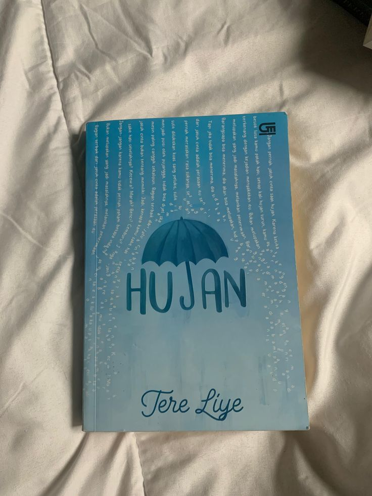
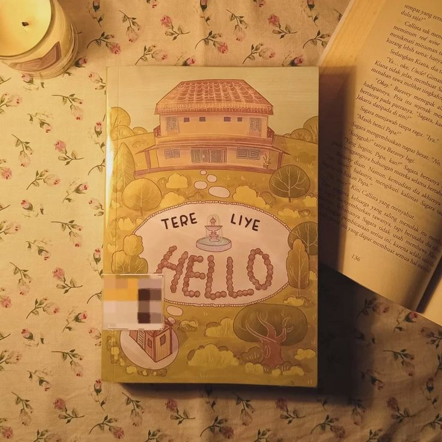

Hujan
Rp95.000
Hujan karya Tere Liye bercerita tentang Lail yang selamat dari bencana besar, berjuang dengan kenangan masa lalu dan perasaannya pada Esok, tentang cinta, kehilangan, dan belajar melepaskan.

Hello
Rp 125.000
Hello karya Tere Liye bercerita tentang anak muda jenius di bidang teknologi yang terlibat dalam proyek besar penuh rahasia, membahas persahabatan, keluarga, kecerdasan, dan dampak teknologi pada kehidupan manusia.

One day in December
Rp 124.000
One Day in December karya Josie Silver menceritakan tentang Laurie yang jatuh cinta pada pria asing yang ia lihat dari jendela bus. Setahun kemudian, ia bertemu lagi—namun pria itu adalah pacar sahabatnya sendiri. Kisah ini tentang cinta, takdir, persahabatan, dan waktu yang tidak selalu berjalan sesuai harapan.

Teluk alaska
Rp100.000
Teluk Alaska karya Eka Aryani bercerita tentang Anastasia, siswi yang sering dibully, dan Alister, siswa populer yang dingin dan ditakuti. Awalnya penuh kebencian dan salah paham, hubungan mereka perlahan berubah jadi kisah cinta remaja yang manis, tentang luka masa lalu, pertemanan, dan proses saling memahami.

Bumi dan lukanya
145.000
Bumi dan Lukanya menceritakan tentang tokoh bernama Bumi yang menyimpan banyak luka batin akibat masa lalu dan keluarga. Cerita berfokus pada proses menghadapi trauma, arti persahabatan, dan bagaimana seseorang belajar menerima diri serta sembuh dari rasa sakit emosionalnya.
Teluk alaska
Rp100.000
Teluk Alaska karya Eka Aryani bercerita tentang Anastasia, siswi yang sering dibully, dan Alister, siswa populer yang dingin dan ditakuti. Awalnya penuh kebencian dan salah paham, hubungan mereka perlahan berubah jadi kisah cinta remaja yang manis, tentang luka masa lalu, pertemanan, dan proses saling memahami.